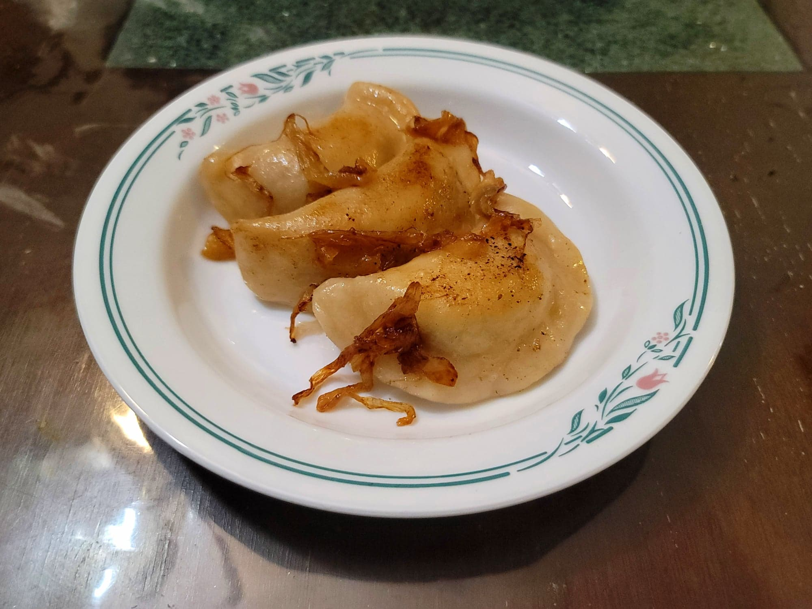

Pierogi Ruskie

Ingredients:
Dough:
- 4 cups (500 g) Flour
- 1 cup Boiling water
- 1/4 cup Canola oil
- 1/2 tsp Salt
Pierogies:
- 500 g Russet potatoes, peeled and cubed
- 3 tbsp Butter
- 2 large Onions, sliced
- 300 g Tvorog, crumbled
- 1/2 tsp Salt, or to taste
- 1/2 tsp Black pepper
To Fry:
- 2 tbsp Butter, or as needed
Instructions:
- Add the potatoes to a large pot of cold, salted water. Heat over high heat and bring to a boil. Boil until tender, about 15 minutes.
- While the potatoes cook, heat the butter in a medium pan over medium heat. Add the onions and sauté until caramelized, about 15-20 minutes. Then remove from heat and reserve.
- When the potatoes are done cooking, strain out the water from the pot. Heat the potatoes over medium heat for 1-2 minutes, stirring often, just to dry them. They are done when you can see a thin layer of residue on the bottom of the pot. Remove from the heat.
- Add the potatoes to a large bowl. Add the tvorog, salt, and pepper and mash until smooth. Then mix in half of the onions. Reserve the rest of the onions for garnish.
- For the dough, combine all of the ingredients and knead until just soft and elastic. Do not overknead.
- Divide the dough into managable portions. Roll out a portion of the dough to about 1/8 inch thick. Cut out circles with a 3 inch cookie cutter. Top with plastic wrap to prevent from drying out. Repeat with the rest of the dough.
- Take a circle of dough and place 1 tbsp of the filling mixture into it. Fold the circle in half and pinch the edges closed to seal and create a 1/2 inch border. Lightly dust the pierogi with flour and loosely cover with plastic wrap until ready to cook. Repeat with the rest of the dough and filling.
- Bring a large pot of salt water to a boil. Work in batches of 5-6. Swirl the water with a spoon to prevent from sticking to the pot and add the pierogies to the boiling water. Let the pierogies start to float, 1-4 minutes, and then continue to cook for another 1-2 minutes. Then strain from the water and transfer to a serving plate. Repeat with the rest of the pierogies.
- Optionally, after boiling you can fry the pierogies. Heat the butter in a pan over medium heat. In batches, add the pierogies and fry for about 4-5 minutes per side or until golden.
- Serve immediately, garnished with the remaining caramelized onions.